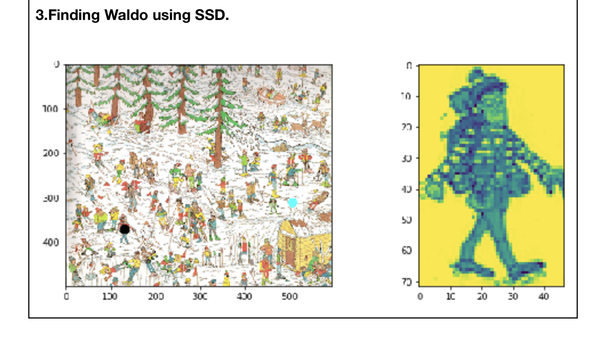

About me
My name is Gagan Hegde.
I live in New York, United States.
I write code to brighten a bad, good and average day. Point being it's fun.
As my portfolio will show you, I am keen on learning new tech. I do believe there's no stopping when it
comes to learning.
I worked as an associate in the worlds largest transport company, helping them decrease reliability on Google
Maps
and improve accuracy in matching between riders and drivers. Can't tell you who cause they told me not to.
I worked for RedHat as a research engineer helping them build Cloud native tools on top of the PaaS OpenShift.
I have sucessfully overseen the end-to-end lifecycle of product development, right from the advent stages to the
release.
In my spare time I do contribute to Open-source projects.
I do believe we can improve the world, one line of code at a time.
Join me as we make this happen and we become a catalyst for positive change.
Open-source contributions:
Full Stack Projects:

Moodle Plug-in.
Tools
Used: PHp, Javascript, CSS3, HTML5, moodle plug in architecture, google maps API
Description: Responsive plug-in that can be incorporated into the moodle architecture, Maps tutors to the
respective
Schools and vice versa, allows for the search of the nearest tutors in the vicinity based on the users current
location

Go-Dutch
Tools
Used: Flutter, Dart, Firebase, Google Auth, Flutery library, Express, NoSQL
>Description: An application built for both the android and the ioS platforms using Flutter a cross platform
development environment,
the application is based on the famous splitwise application where the users can actively split money by
actively creating groups.
Flutter has now actively broadened its scope to create applications even for the web.

Python Compiler Api
Tools
Used: Node, Javascript ES6, Express, Postman, AWS
Description: An API whose endpoint used in a POST request returns the python code results that were passed
using the
key value pair in JSON with the following format {"code":"actual code"}, the given process uses the child
process on the parent server on the backend.
The implementation showcased in the .gif file is was run on the local server where python 3 was installed.
A simple for loop implementation returns a result in the GET request.

Banana Chomp
Tools
Used: Android, Java, Advanced OOPs concepts, Inhertitance, LibGdx library, tile-maps,
sprites
Description: Just a game made that is available on the andorid store, turns out making a game is the best way
to
get a hold of the
concepts of Javas abstract classes, Inheritance concepts, Multi-threading and Object Oriented concepts. The game
is a
rudimentary
of how
a monkey jumps over logs/obstacles as it approcahes the Banana, collision causes the game to end. The final
goal is to catch the banana as it nears you and obstacles start approaching faster.

Valentines (Dynamic Form)
Tools
Used: HTML5, AJAX, CSS3, Javascript, Cookies and Local Storage
Description: This might look rudimentary but has all the elements that go into making a showcasing data on a
webpage. Involves an implementation of how different form elements can be generated using jaavscript,
the different form elements are rendrered after getting its content from an AJAX call. A small plugin allows you
to render data based on your previous session. If the data is present in cache your preferences are stored.
This was a small project in my graduate client design course.
ES6 standard.
Computer Vision Projects:

K-means to merge two images:
Tools
Used: Python, Jupyter Notebook, PyTorch, Scikit etc
Description:The given array is taken and then random rows are assigned as values of the centroid. The values
are then squared using the numpy.square value.The values input matrix are then subtracted from the randomly
taken centers.The differences are then added to determine the closest pairs.The smallest of the differences are
taken, using the numpy.mimimumThe values are then assigned to the cluster based on the centroid they were taken
from.This is repeated for a value = k-fold times, until they dont converge anymore.

Image Enhancement Filters
Tools
Used: Python, Jupyter Notebook, PyTorch, Scikit etc
Description: The following problem involved the incorporation of the Gaussian filter along with the different
values of kernel size as well as different sizes of the variance sigma. Alongside this it was necessary to
convert the image from an RGB to LAB format, extract the L component which is responsible for the Intensity in
the image.The. its normalized and scaled up and the A, B component are merged again, thus resulting in the
sharpened image.
The kernel size and the Gaussian filter both determine the overall size influence the adjacent pixels have on
the pixel under consideration or at the center of the matrix.

Object Detection
Tools
Used: Python, Jupyter Notebook, PyTorch, Scikit, Image Processing etc
Description: This technique finds the position of Waldo based on the the sum of squared difference.
The point marked by the image is indicated in black dot. This method works perfectly as well and is considered
as one of the most robust techniques for template matching. The difference between the template matching
incorporated using cross correlation is to identify the portions of the image that are useful we use take the
negation compare the brighter parts with the brighter parts and the darker parts with the darker parts. Thus the
regions that match get the highest score, we take the min and we have the result.
International Coneference and Paper Publication: